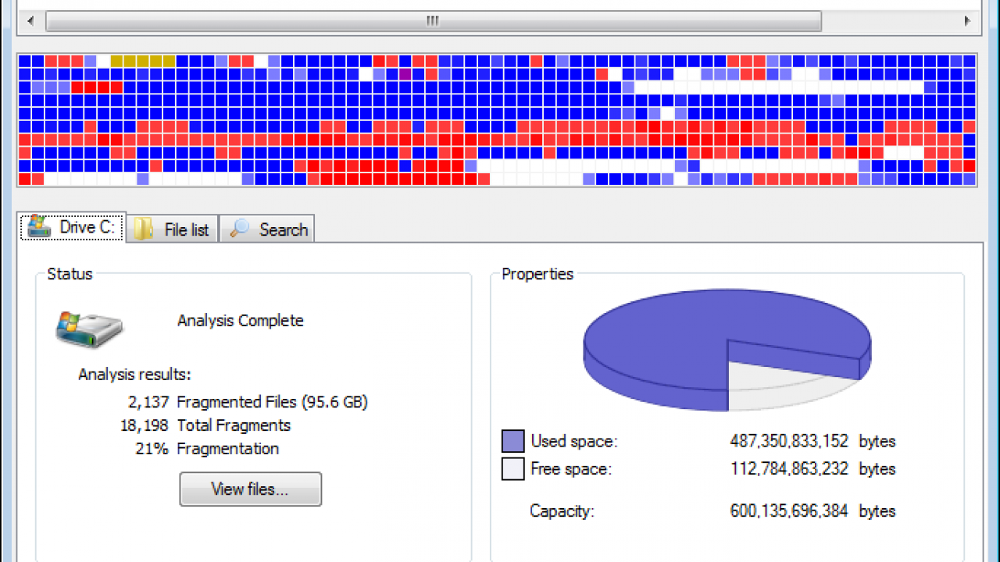

| ¿Qué es desfragmentar un disco duro y para que sirve? | |
|---|---|
| Operación que a veces es necesaria para poner orden en los discos duros mecánicos en los que sueles escribir, ya que sistemas operativos como Windows tienden a ir dejando fragmentos en ellos que con el paso del tiempo pueden ralentizarlos e incluso romperlos por el exceso de movimientos del brazo mecánico. | |
|  | Los archivos dentro de tu ordenador no son piezas completas en sí, ya que un vídeo, o cualquier otro archivo está compuesto de pequeños fragmentos que son guardados en tu disco duro. Windows sabe dónde están y cómo localizarlos, pero según vas utilizando el disco duro escribiendo y borrando archivos, es posible que no siempre consiga ordenarlos todos correctamente |